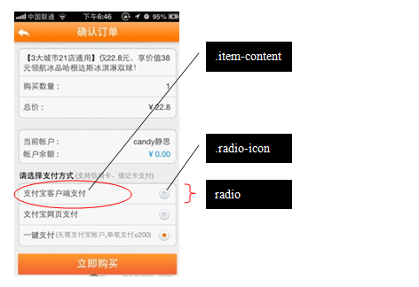

单选按钮 : .item-radio input[type="radio"]
单选按钮用来从一组选择中作出仅仅一个选择：
例如 
正如上图所见，单选按钮的可视部件包括两部分：
选中图标（.radio-icon） 和描述内容（.item-content），你可以在.item-content随便添加 内容。
例如：单选按钮基于HTML的radio input元素实现。使用如下的HTML模板 声明单选按钮：
...
单选按钮通常不单独使用，将他们放入一个列表中：
...
...
...
注意：group-name决定了单选按钮的分组，所以对于互斥的选择项，必须 将它们的group-name设置为相同的名称。